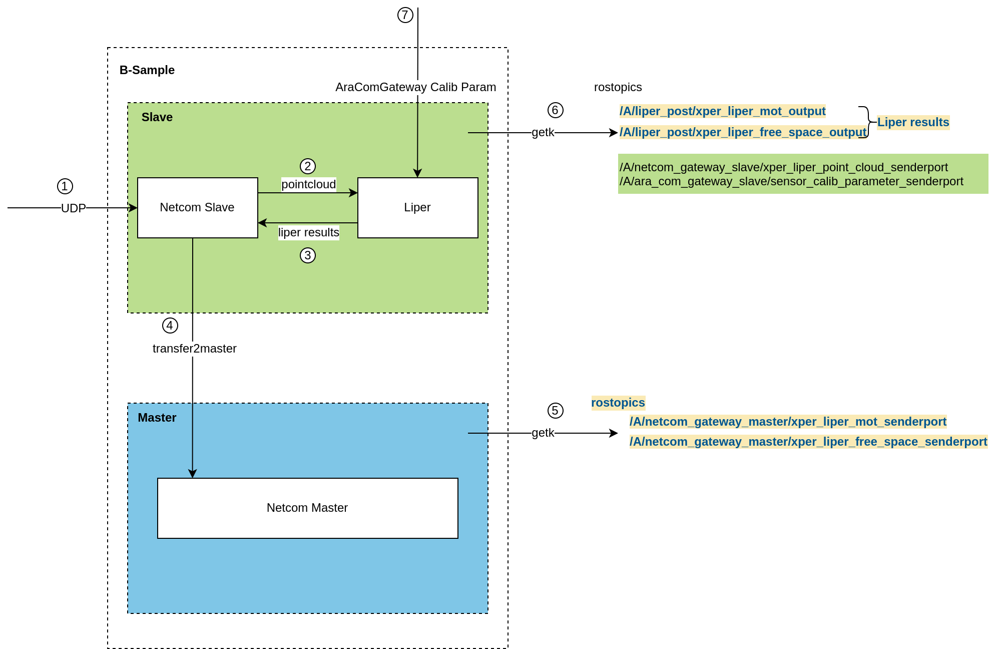
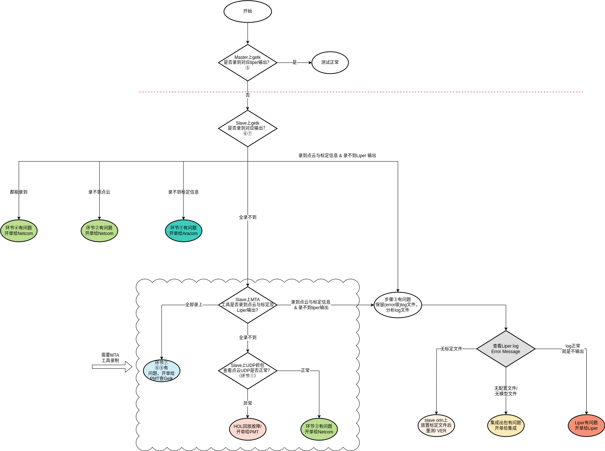

LIPER test problem single workflow combing
CNWVIII-58251 - Jira issue doesn't exist or you don't have permission to view it.
LIPER data stream chart

Liper test flowchart

Indicate:
|
Serial number |
Check items |
Signal/module responsible group |
Comments |
|
1 |
Dianyun signal / A/netcom_gateway_slave/xper_liper_point_cloud_senderport Master Netcom_gateway /A/netcom_gateway_master/xper_liper_mot_senderport /A/netcom_gateway_master/xper_liper_free_space_senderport |
BSW |
|
|
2 |
GETK |
PMT |
|
|
3 |
Hol back to the UDP channel |
PMT |
|
|
4 |
Test bundle contains configuration file/model file |
integrated |
|
|
5 |
Test the HOL table frame B-SAMPLE has a calibration file |
VER |
|
|
6 |
/A/liper_post/xper_liper_mot_output /A/liper_post/xper_liper_free_space_output |
LIPER |
|
Historical issue
|
Single number |
Single date |
Problem Description |
Cause of |
Current state |
|
2023-08-25 |
[Pre -Integrated] [Hol] No LIPER OUTPUT on Hol |
Can't record SLAVE's bags, LOG logs are completely closed, and you cannot locate |
CLOSED |
|
|
2023-08-23 |
[DEV-607] [HOL]]Parking] no liper sendout |
Can't record SLAVE's bags, LOG logs are completely closed, and you cannot locate |
CLOSED |
|
|
2023-08-07 |
[607 Dev] Parking can not find liper output |
Can't record SLAVE's bags, LOG logs are completely closed, and you cannot locate |
CLOSED |
|
|
2023-07-27 |
[607 Dev] Parking algorithm without liper output |
SLAVE software calibration file is not placed, so the algorithm does not output |
CLOSED |
Associated Tickets
|
Single number |
Single date |
Problem Description |
Latest state |
Follow -up action item |
|
2023-08-25 |
[Driving&Parking] can not record slave data correctly |
Yes, the current new version of Wavizzz supports configuration M & S Orin and related recording topic, so it is recommended to pay attention to the release of the tool version. In addition, the current Getk hardware only replaces the data transmission link of Master Orin, and does not affect SLAVE. For recording data, the new version of the upper machine software is okay. |
Verification Team uses the new version of Wavizzzz with support configuration M & S Orin and related recording TOPIC |
status quo
Currently testing colleagues at the red line of the flowchart, that is, directly open the order to LIPER
But according to the current VV feedback, the existing HOL test process:
Unable to use Getk to record the ravecic package on SLAVE, you need to contact PMT docking corresponding development requirements (0823 has contacted Wang Jianwei, saying that it can be recorded)
therefore, In the case where there is no SLAVE package and no effective log : LIPER no output problem form, according to the above flowchart: Unable to position
Demand
Add the SLAVE record package function as soon as possible during the HOL test process
LIPER has no output problem and the link is complicated and lengthy.